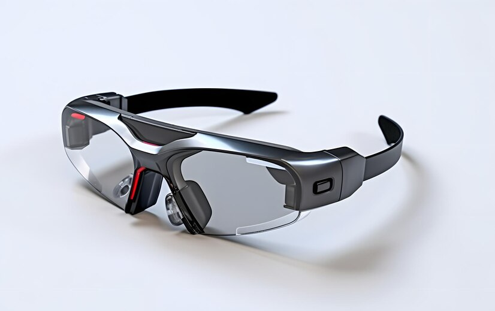

Empresa de tecnologia anuncia lançamento de óculos inteligentes revolucionários
Uma renomada empresa de tecnologia acaba de anunciar o lançamento de óculos inteligentes revolucionários que prometem transformar a maneira como interagimos com o mundo digital.
Arnaldo Michelangelo
27/06/2023 21h41

Uma renomada empresa de tecnologia acaba de anunciar o
lançamento de óculos inteligentes revolucionários que
prometem transformar a maneira como interagimos com o
mundo digital. Esses óculos, equipados com tecnologia de
realidade aumentada avançada, oferecem uma experiência
imersiva e interativa, projetando elementos virtuais no
campo de visão do usuário.
Os óculos inteligentes são leves e possuem uma tela
transparente de alta resolução, permitindo que os
usuários visualizem informações digitais sobrepostas ao
ambiente real. Além disso, eles são equipados com
sensores avançados, como câmeras e microfones, que
permitem a detecção de gestos e comandos de voz para
interação intuitiva.
Com esses óculos, os usuários podem receber notificações
em tempo real, acessar aplicativos, fazer chamadas de
vídeo, navegar na internet e até mesmo visualizar rotas
de navegação, tudo sem precisar tirar os olhos do mundo
ao seu redor. A empresa está trabalhando em parceria com
desenvolvedores para criar uma ampla variedade de
aplicativos e conteúdos compatíveis com a tecnologia dos
óculos inteligentes.
Além do uso no cotidiano, a empresa também está
explorando aplicações em setores como medicina,
manufatura e educação. Os óculos inteligentes podem
auxiliar cirurgiões durante procedimentos complexos,
fornecer informações em tempo real para trabalhadores de
linha de montagem e enriquecer a experiência de
aprendizado com conteúdo interativo.
No entanto, a empresa também enfrenta desafios,
especialmente em relação à privacidade e segurança dos
dados dos usuários. Para mitigar essas preocupações,
estão sendo implementadas medidas rigorosas de proteção
de dados e transparência.
O lançamento desses óculos inteligentes representa um
salto significativo na integração do mundo digital ao
nosso ambiente físico, trazendo uma nova forma de
interação e possibilidades ilimitadas. A empresa está
entusiasmada com o potencial dessa tecnologia e espera
que ela revolucione a maneira como vivemos, trabalhamos
e nos divertimos.
Com previsão de lançamento para o próximo ano, os óculos
inteligentes estão gerando grande expectativa entre os
consumidores, que aguardam ansiosamente por essa nova
era de interação tecnológica. Será interessante observar
como essa tecnologia se desenvolverá e como ela
impactará nossa sociedade nos próximos anos.